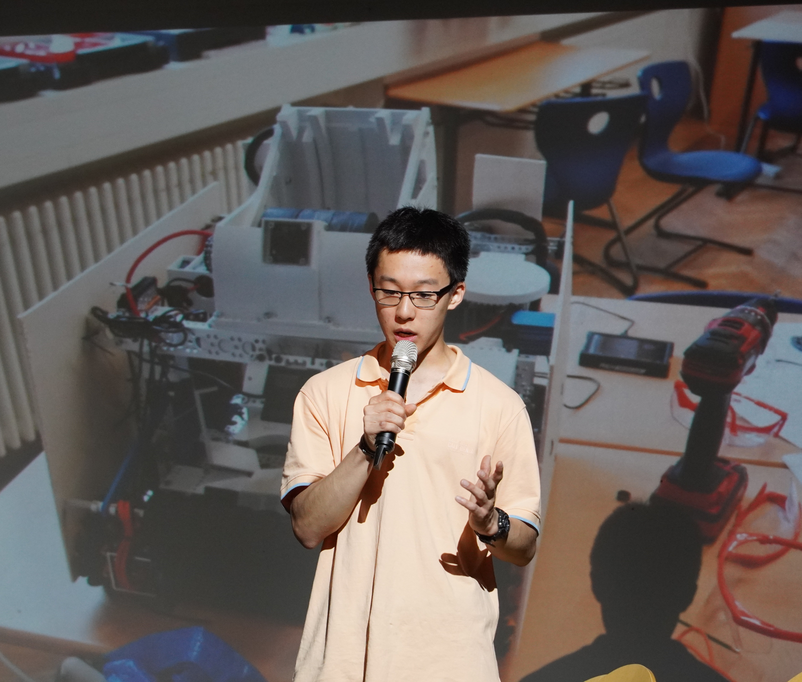

KW

Kazuma Wong
Teamkapitän & Chefingenieur
- Leitete die technische Vision und strategische Ausrichtung des Teams und stellte die Abstimmung zwischen Engineering-Zielen und Wettbewerbsleistung sicher
- Entwarf und baute die Kernsysteme des Roboters, einschließlich des Flicker-Mechanismus und eines vollständig drehbaren Turms mit verstellbarer Haube für Präzision und Anpassungsfähigkeit
- Baut internationale Partnerschaften mit führenden deutschen und chinesischen Teams auf und förderte Zusammenarbeit sowie Wissensaustausch
- Erstellte und pflegte die Team-Website